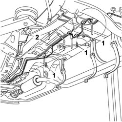

1042B10 CNG supply PIPE from solenoid valve to pressure reduction unit - R.R.
- Path
- Procedures > 10 ENGINE > 1042 (METHANE) CNG CANISTER AND PIPES > 1042B gas circuit tubes and pipes > 1042B10 CNG supply PIPE from solenoid valve to pressure reduction unit - R.R.
- Kind
- repair procedure (removal / refitting; the operation number is the code)
- Applies to
- all engines; all production periods; only with equipment: BIPOWER
- Interactive page
- https://sloeber94.github.io/elrnDB-fDbl/en/#/2584534
Applies to: all engines; all production periods; only with equipment: Cargo trim level and BIPOWER
 Removing
Removing
 Refitting
RefittingPosition the vehicle on a lift.
5040A10 Air conditioning refrigerant CIRCUIT - Draining and Refilling .
Drain the high and low pressure circuit as described in the specific operation 1042A02 C.N.G. - FUEL SYSTEM Safety check .
7040A60 under facia trim - r+r .
7065A14 ANCHORAGE ROD for , (one), front seat belt left or right - R.R. .
1042E60 CNG CANISTER ASSEMBLY SHIELD/PROTECTION / - R.R. .
1042A72 Centre CANISTER for CNG CANISTER ASSEMBLY - R.R. .
1042E62 FRONT mounting BRACKET for CNG canister shield - R.R. .
3380A30 handbrake cable - r+r (left side).
4450B12 front or rear wheels (two) - r+r .
1044E10 cng injection system pressure reduction unit - r r .
5040B14 air conditioner system multi-level pressure switch - r+r .
5040A54 pipe from dehydrating filter to expansion valve - r+r .
5040A72 evaporator outlet pipe - r r .
7055B54 under-engine guard - r r .
4410D13 front suspension beam - r r .
1. Undo the bolts securing the retaining bands.
2. Release the pipe from the retaining clips under the bodywork and remove it from the under the rear of the vehicle.

Applies to: all engines; all production periods; only with equipment: Cargo trim level and BIPOWER
Refitting
RemovingCheck the condidtion of the CNG supply pipe.
Position the pipe on the bottom of the bodywork and insert the front end into the engine compartment.
Secure the pipe on the bottom of the bodywork to the clips and bands using bolts.
4410D13 front suspension beam - r r .
7055B54 under-engine guard - r r .
5040A72 evaporator outlet pipe - r r .
5040A54 pipe from dehydrating filter to expansion valve - r+r .
5040A54 pipe from dehydrating filter to expansion valve - r+r .
5040B14 air conditioner system multi-level pressure switch - r+r .
1044E10 cng injection system pressure reduction unit - r r .
4450B12 front or rear wheels (two) - r+r .
3380A30 handbrake cable - r+r (left side).
1042E62 FRONT mounting BRACKET for CNG canister shield - R.R. .
1042A72 Centre CANISTER for CNG CANISTER ASSEMBLY - R.R. .
1042E60 CNG CANISTER ASSEMBLY SHIELD/PROTECTION / - R.R. .
Lower the vehicle on the lift.
7065A14 ANCHORAGE ROD for , (one), front seat belt left or right - R.R. .
7040A60 under facia trim - r+r .
5040A10 Air conditioning refrigerant CIRCUIT - Draining and Refilling .
Manually set the CNG cut-off solenoids to the open position and check that the system is working.
Connect the Examiner diagnostic instrument in the 'Active Diagnosis' environment, and select and run 'Gas solenoid relay' to allow the solenoids to open and
Topics linked from this page (17)
- 1042A02 C.N.G. - FUEL SYSTEM Safety check
- 1042A72 Centre CANISTER for CNG CANISTER ASSEMBLY - R.R.
- 1042E60 CNG CANISTER ASSEMBLY SHIELD/PROTECTION / - R.R.
- 1042E62 FRONT mounting BRACKET for CNG canister shield - R.R.
- 1044E10 cng injection system pressure reduction unit - r r
- 3380A30 handbrake cable - r+r
- 4410D13 front suspension beam - r r
- 4450B12 front or rear wheels (two) - r+r
- 5040A10 Air conditioning refrigerant CIRCUIT - Draining and Refilling
- 5040A54 pipe from dehydrating filter to expansion valve - r+r
- 5040A72 evaporator outlet pipe - r r
- 5040B14 air conditioner system multi-level pressure switch - r+r
- 7040A60 under facia trim - r+r
- 7040L20 tunnel trim - r r
- 7055B54 under-engine guard - r r
- 7065A14 ANCHORAGE ROD for , (one), front seat belt left or right - R.R.
- 7210E10 R.R. FRONT BUMPER